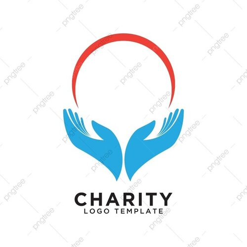

“Our highest deeds come from helping the lowest people.”
“Overcoming poverty is not a gesture of charity. It is an act of justice. It is the protection of a fundamental human right, the right to dignity and a decent life.”
The Genuine Charity brings together the community of experts,
academics, nad activists who comprise the Creative Commins affiliates
network in a different country every two years. This year, we hope to
expand our invitation list including organizations and individuals who
want to work with us on shared projects taht advance the cause of yhe
commons, free culture nd open kwnoledge. So if you're active and
engaged in the worlds of open content and kwnoledge - free software
advocates. Wikipedias, Open Kwnoledge, galeries, libraries, museums,
archives, governments and foundations, kawyers, and activists - we
hope you'll consider joing us this year to build a stronger, more
vibrant commons together.
Please contact us per Email for any further questions about Genuine
Charity and care at
christianbiringanine22@gmail.com >
Genuine Charity and Care Logo
The logo of Guine Charity and care will be decided through the logo competiton form 8 June to 7 July. After online public voting and Selection Committee's judging process. the logo that will win prize. After consultation with Mr. Agrawal will be optimized the prize-winning-logo for the coming years.
See the past GC campain
Take a look at the last two GC Campain which took place in the last year in Kigali and in Peru
March
GC Campain in Peru
September
GC Campain in Kigali
© 2022 Genuine Charity. Some Rights Reserved.
Created by Christian Biringanine